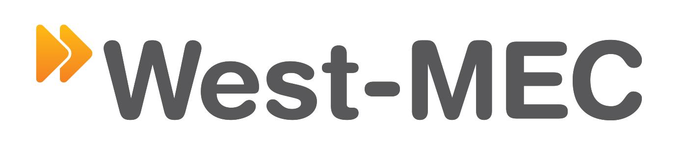
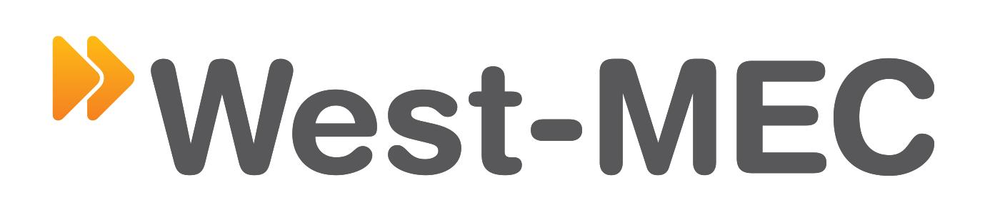

The Avionics program has a CTSO (Career Technical Student Organization) called SkillsUSA and is run by the second year students. Positions include; President, Vice President, Secretary, Treasurer, Reporter, and Parliamentarian. The students learn leadership skills through this program and they will partake in two SkillsUSA Fall Conferences, two SkillsUSA State Conferences, and two SkillsUSA National Conferences throughout their 2 years in this program. The students participate in community service projects and organize fundraisers. Past community service projects include places such as Adapt-A-Toy where SkillsUSA teams up with Kingswood elementary. They rewire and configure toys for the use of children who have disabilities who can’t play with regular toys.